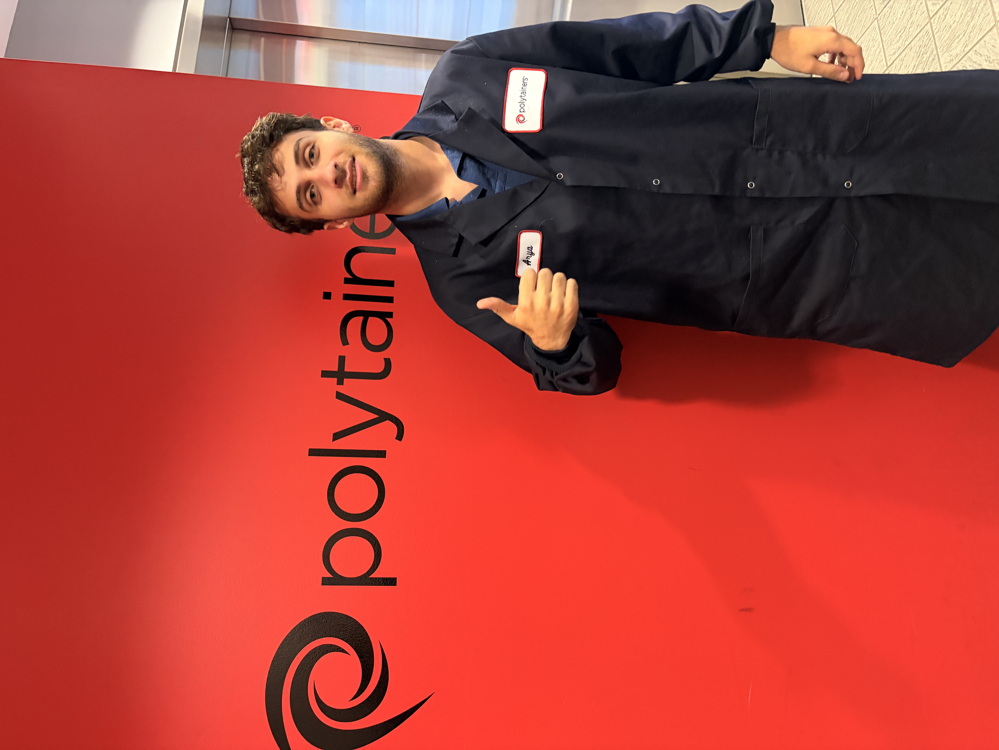
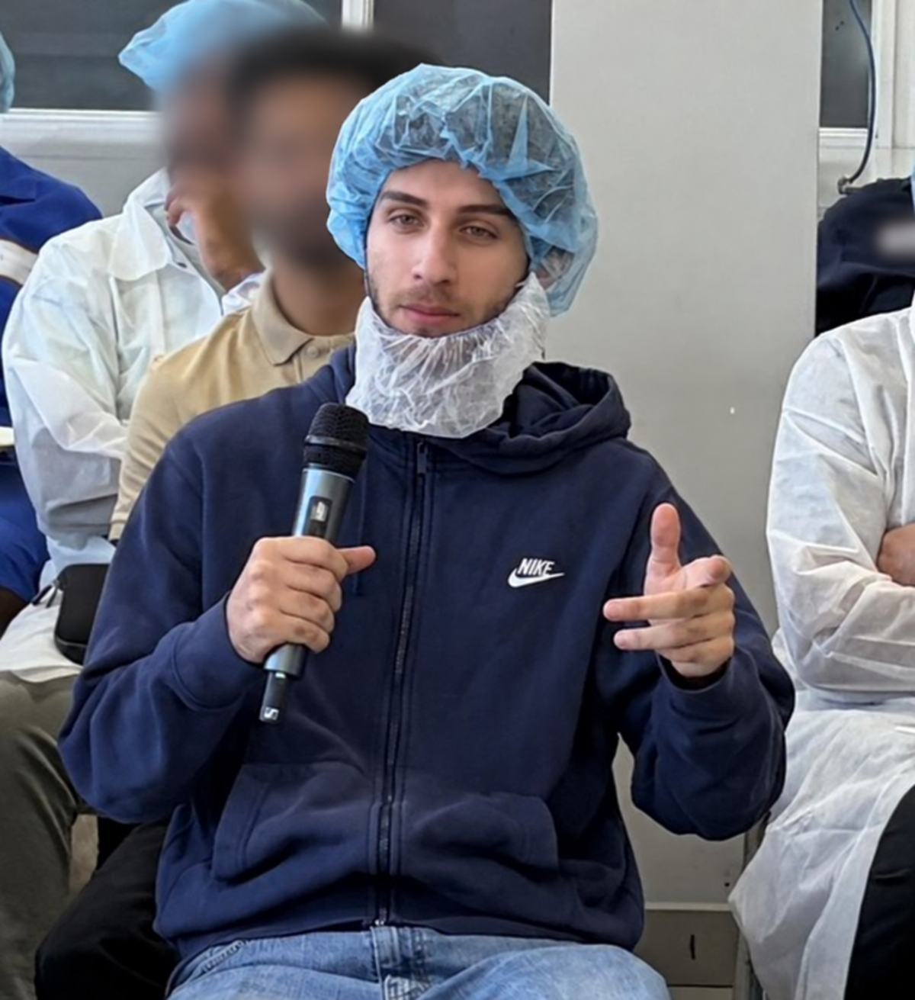

Introduction

During the Summer 2026 work term, I worked at Polytainers in Etobicoke, Ontario as a SAP Coordinator. My role focused on using SAP, an enterprise resource planning (ERP) system, to support and manage information related to manufacturing operations. I regularly worked with production and inventory data, investigated system discrepancies, troubleshot SAP-related issues, and helped ensure that information within the system accurately reflected real-world operations.
This experience gave me the opportunity to apply computing concepts in a large-scale industrial environment and see how information systems are used to manage complex business processes. Through working with SAP, Excel, data analysis tools, and large amounts of operational data, I developed my technical problem-solving skills and gained a greater appreciation for data accuracy, system reliability, and the relationship between software and the people who depend on it. This report reflects on my responsibilities, technical experiences, challenges, learning goals, and the skills I developed throughout my work term at Polytainers.
About Polytainers
Polytainers is a Canadian manufacturing company based in Etobicoke, Ontario that specializes in producing plastic packaging solutions for the food and consumer products industries. The company operates in a large-scale manufacturing environment where production, inventory, warehousing, quality, planning, and other departments must work together to ensure products are manufactured and delivered efficiently.
Technology and information systems play an important role in coordinating these operations. Polytainers uses SAP as its enterprise resource planning (ERP) system to manage and connect information across different areas of the business. Production orders, material consumption, inventory movements, and other operational data are recorded and processed through the system, creating a digital representation of activities occurring throughout the facility.
Working in this environment showed me how computing extends beyond traditional software development. Large information systems such as SAP allow organizations to process significant amounts of data and connect physical operations with digital information. My position allowed me to work directly with these systems and better understand how reliable data and software are essential to the operation of a modern manufacturing company.
My Role
As a SAP Coordinator, my main responsibility was supporting the systems and data used to manage daily production operations. A large part of my work involved SAP, where I monitored production orders, reviewed inventory and material information, corrected system errors, and investigated situations where the data in SAP did not match what was happening physically in the facility.
Troubleshooting was a major part of my day-to-day work. When an issue appeared in SAP, there was not always an obvious solution. I often had to investigate different parts of the system, compare information from multiple sources, and determine what caused the problem before deciding how it could be corrected. I also worked with employees from production, warehousing, planning, and IT when an issue required information from different areas of the company.
I also used tools such as Microsoft Excel and Power Query to organize and analyze larger amounts of data. This helped me identify patterns and inconsistencies that would have been difficult to notice by looking through individual records manually. Through these responsibilities, I gained experience working with real business data and learned how technical problem-solving can be applied outside of a traditional software development environment.
Goals & Learning Outcomes
At the beginning of my work term, I set three main learning goals that focused on improving my technical skills, problem-solving abilities, and teamwork. These goals gave me a clear idea of what I wanted to improve throughout the term and helped me reflect on how much I had developed by the end.
Technological Literacy
My first goal was to improve my understanding of SAP and become more confident using the transactions and tools needed for production orders, inventory, and reporting.
At the beginning of my work term, I often needed guidance when using unfamiliar transactions or dealing with system-related issues. Through daily use, I became much more comfortable working with production orders, inventory movements, confirmations, reversals, and other SAP processes.
By the end of the term, I was able to complete most of my daily SAP responsibilities independently and troubleshoot many common issues with minimal assistance. This goal helped me become much more confident working with a large enterprise system and strengthened my overall technological literacy.
Problem Solving
My second goal was to improve my ability to investigate issues, identify their root causes, and determine possible solutions.
Throughout the term, I encountered situations where production orders, inventory quantities, or SAP records did not match what was physically happening in the facility. These situations required me to look through available data, compare different records, and determine where the issue may have started.
As I gained more experience, I became more confident investigating problems on my own before asking for help. I learned how to approach issues in a more organized and systematic way, which helped me become more independent and effective when troubleshooting.
Teamwork & Communication
My third goal was to improve my communication and teamwork skills by working more effectively with different departments.
Many of the issues I worked on involved employees from production, warehousing, planning, inventory, and IT. Because of this, I learned the importance of asking clear questions, sharing useful information, and communicating with the right people when solving a problem.
Over time, I became much more comfortable reaching out to different team members directly instead of relying on my supervisor to coordinate communication for me. This helped me become a more confident team member and gave me a better understanding of how different departments work together to solve technical and operational problems.
I also had the opportunity to speak with Polytainers CEO Susan Dalgliesh during an open discussion with other new hires. The meeting gave us a chance to ask questions about the company, career paths, and opportunities to grow at Polytainers.

Key Experiences & Projects
One of the most valuable parts of my work term was getting the chance to work on real issues that required more than simply following a set of instructions. Many of the problems I encountered involved investigating data, understanding how SAP represented physical operations, and figuring out where discrepancies were coming from.
SAP Troubleshooting
A large part of my role involved investigating SAP issues related to production orders, confirmations, inventory movements, and material consumption. When something did not look correct in the system, I had to review the available information, compare different records, and determine what may have caused the issue.
Over time, I became more comfortable working through these problems independently. This helped me improve both my understanding of SAP and my overall troubleshooting skills.
Data Analysis with Excel and Power Query
I also used Microsoft Excel and Power Query to work with larger sets of operational data. Instead of reviewing records individually, I was able to organize, filter, and group information so that patterns and inconsistencies were easier to identify.
This experience showed me how useful data tools can be when working with large amounts of information. It also gave me more experience using technology to make problem-solving faster and more organized.
Connecting Digital Data to Real Operations
One of the most interesting things I learned was how closely connected the digital information in SAP was to what was happening physically in production and the warehouse. A discrepancy in the system could be caused by something that happened earlier in the manufacturing or inventory process.
Because of this, solving an issue often meant understanding both the system and the real-world process behind the data. This gave me a better understanding of how computer systems are used to represent and support complex business operations.
What I Learned
My work term gave me a much better understanding of how computing is used in a real workplace. Before this experience, most of my exposure to computing came from programming assignments and course projects. At Polytainers, I saw how software, data, and information systems are used every day to support a large organization.
I also learned that technical problems are not always solved by looking at the system alone. Many issues required communication with different departments and an understanding of the real process behind the data. This helped me become more patient, organized, and confident when approaching unfamiliar problems.
Overall, I became more independent throughout the term and more comfortable working with enterprise software, large amounts of data, and real-world technical issues. These are skills that I believe will be useful in future computing and technology roles.
Conclusion
My co-op term at Polytainers gave me the opportunity to apply computing skills in a real workplace and understand how technology supports day-to-day business operations. I became more confident using SAP, improved my problem-solving skills, and learned how important accurate data and clear communication are when working with large systems.
The experience also showed me that computing can be applied in many different environments, not just traditional software development. I finished the term with stronger technical skills, more confidence working independently, and a better understanding of how technology connects people, data, and real-world processes.
Acknowledgments
I would like to thank my supervisor and coworkers at Polytainers for their support, guidance, and patience throughout my work term. I appreciate the time they took to teach me new processes, answer my questions, and help me grow more confident in my role.